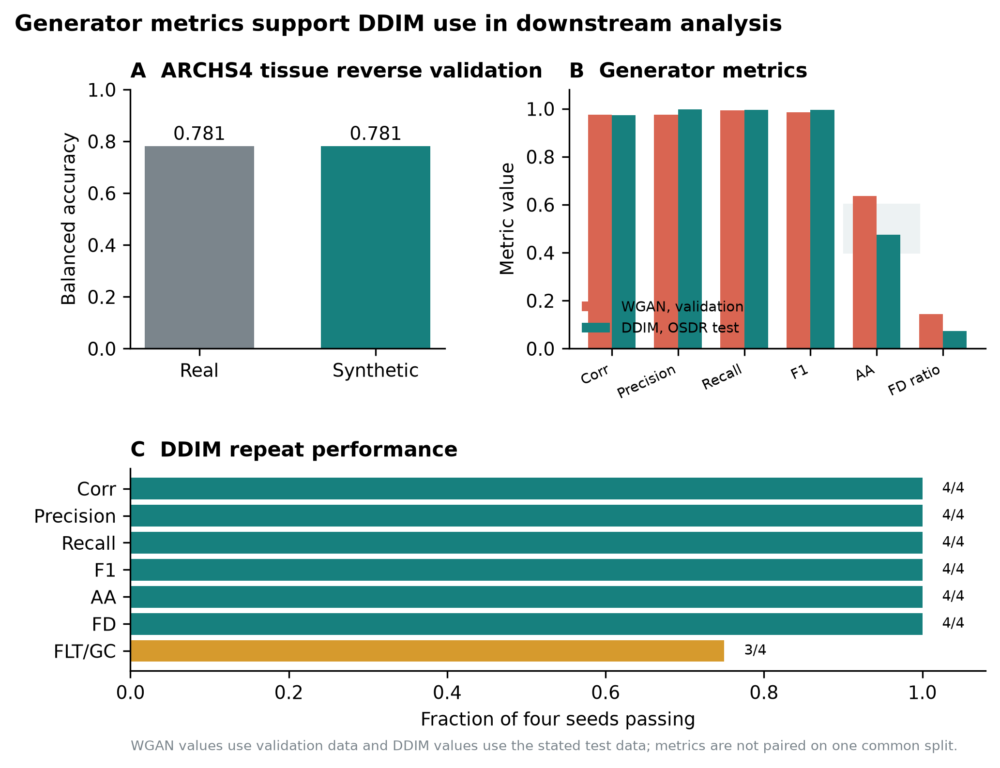
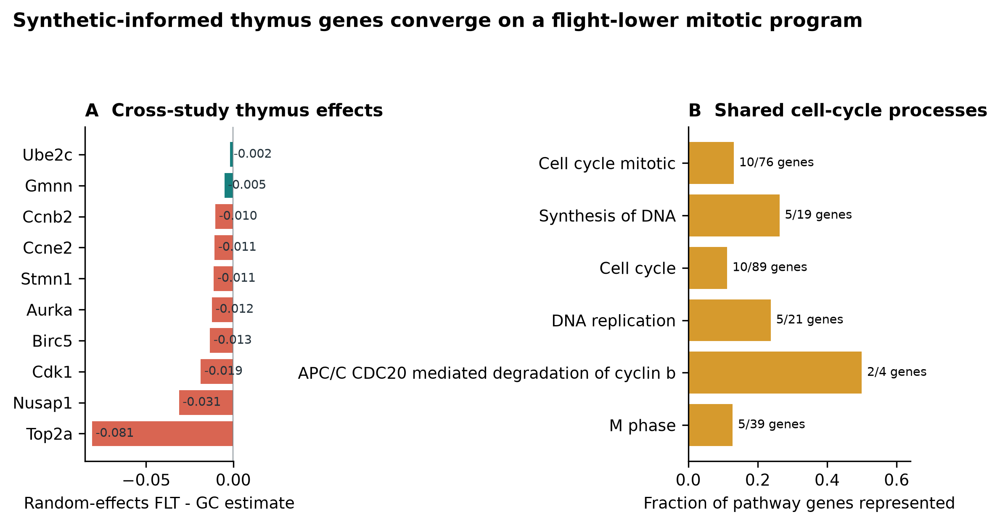
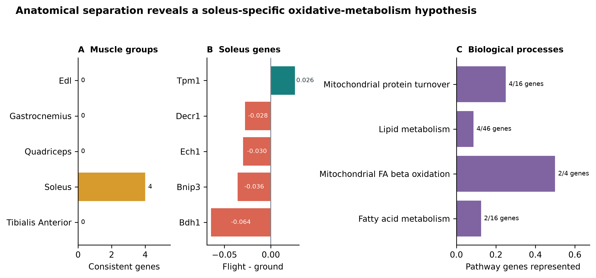
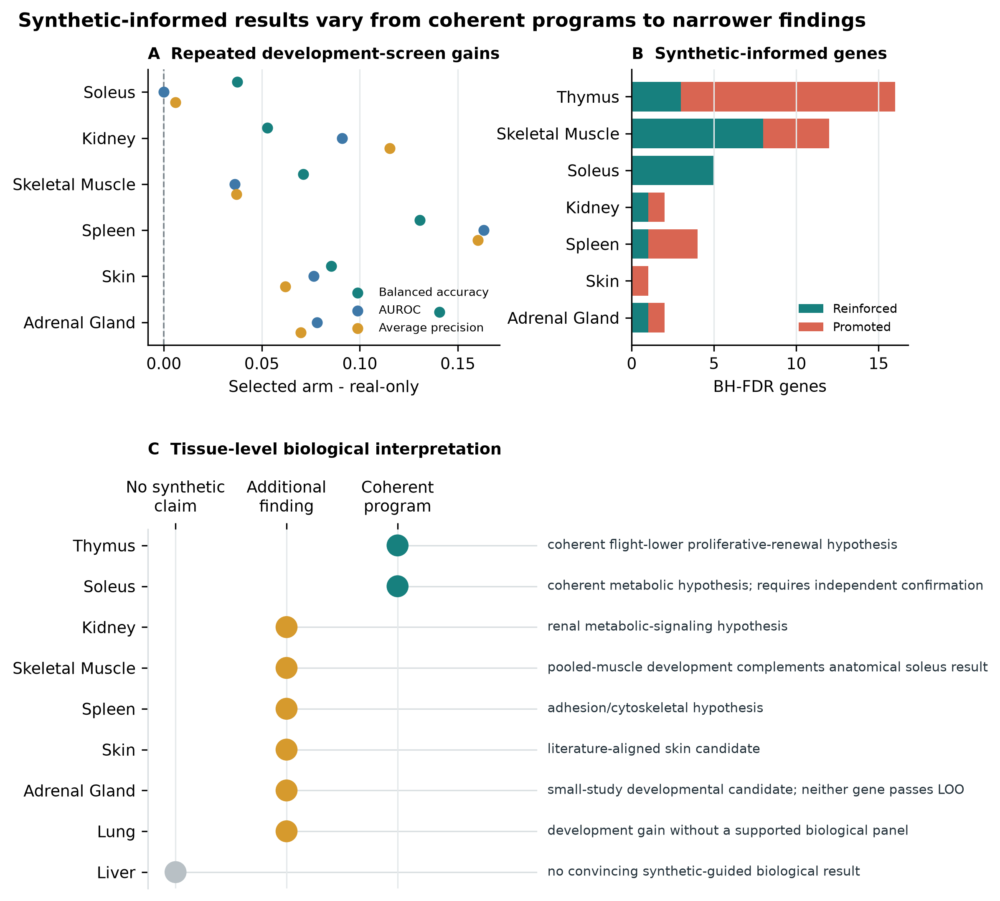

A configurable generative transcriptomics framework identifies tissue-dependent synthetic utility in mouse spaceflight RNA-seq
Benchmarking conditional WGAN and diffusion models across NASA OSDR mouse transcriptomes
Jason Trinh
Space Life Sciences Training Program, NASA Ames Research Center, Moffett Field, California, USA
Correspondence: jasontrinh@berkeley.edu
Research manuscript draft for author review. Author list, acknowledgments, repository release URL, and archival DOI require final review before submission.
Abstract
Background: Mouse spaceflight studies provide access to tissues that cannot be sampled extensively from astronauts, but individual experiments are small and differ in design. We developed a configurable generative transcriptomics framework and asked whether synthetic expression could improve organ-specific flight analysis without treating generated profiles as new animals.
Methods: We assembled 1,610 mouse flight and ground-control bulk RNA-seq profiles through the NASA Open Science Data Repository API and audited all 997,515 profiles in ARCHS4 mouse. The reusable pipeline treated expression transformation, feature space, harmonization, training source, study scope, tissue structure, conditioning, and model family as configurable axes. Paper-based WGAN-GP and diffusion implementations were compared using fidelity, real-versus-synthetic separability, distributional-distance, and FLT/GC-effect metrics. The diffusion model used downstream was pretrained on 17,244 tissue-diverse ARCHS4 profiles. Downstream analysis compared pooled and tissue-specific uses of generated expression. Flight associations were tested with real profiles using accession-level random-effects models and Benjamini-Hochberg false-discovery control.
Results: None of nine matched liver harmonization arms provided adequate fidelity and conditional-effect recovery together. A calibrated study-conditioned WGAN-GP achieved correlation 0.976, precision 0.976, recall 0.994, F1 0.985, adversarial accuracy 0.636, and a Frechet-distance ratio of 0.144 on validation. Across four diffusion seeds, correlation was 0.974, precision 0.997, recall 0.996, F1 0.997, adversarial accuracy was 0.475, and the Frechet-distance ratio was 0.074. Diffusion was therefore used downstream because it was less distinguishable from real data and had lower distributional distance while retaining high fidelity. Pooled augmentation reduced balanced accuracy from 0.754 with real-only training to 0.737 with real-plus-generated training. Tissue-specific use was more informative: 49 real-data BH-FDR associations also entered stable synthetic-informed selection, including a flight-lower mitotic program in thymus and a soleus program with lower Bdh1, Ech1, Bnip3, and Decr1 and higher Tpm1.
Conclusions: Model choice depended on joint fidelity and biological-effect recovery rather than one favorable metric. Diffusion provided the strongest distributionally validated generator, but its downstream value depended on tissue and mode of use. Synthetic expression worked better as a feature prior or regularizer than as additional biological sample size. Thymus and soleus supplied the strongest coherent biological programs; additional tissues supplied narrower testable hypotheses that require independent biological replication.
Keywords: spaceflight; bulk RNA-seq; synthetic data; diffusion model; skeletal muscle; thymus; NASA OSDR; ARCHS4
Introduction
Spaceflight affects immune, musculoskeletal, metabolic, and barrier tissues through a combination of microgravity, radiation, confinement, altered nutrition, stress, and mission-specific procedures. Mouse flight experiments provide tissue access that is unavailable in astronauts, but their transcriptomic interpretation is difficult. Individual studies are small, missions differ in strain and duration, and condition labels can be entangled with study, material, genotype, or collection protocol. Pooling samples without preserving these design variables can convert study effects into apparent flight biology.
The NASA Open Science Data Repository (OSDR) now exposes sample metadata and processed assay data through a queryable biological API [1]. This makes it possible to assemble a cross-study cohort while retaining accession-level provenance. Public reference resources offer a second opportunity. ARCHS4 uniformly processes a large fraction of public human and mouse RNA-seq data [2], providing tissue-diverse reference profiles for pretraining models that would be underdetermined on OSDR alone.
Deep generative models can learn high-dimensional expression distributions. Conditional WGAN-GP models have reproduced tissue and cancer properties in GTEx and TCGA [3]. More recently, Lacan and colleagues adapted denoising diffusion probabilistic and implicit models to bulk transcriptomics and reported strong gene-correlation, neighborhood, adversarial, and downstream classification metrics [4]. We therefore compared these two generator families under a shared data and evaluation framework.
The model is only one part of the problem. Multi-study bulk RNA-seq can be represented as counts, CPM, TPM, or transformed and scaled expression; studies can be corrected, explicitly conditioned, modeled separately, or pooled. Published spaceflight workflows have used within-study standardization [23] and compared ComBat, ComBat-seq, and MBatch correction families [24]. MOBER offers a learned, inductive alternative based on an adversarial conditional variational autoencoder [25]. Any of these choices can improve one diagnostic while erasing flight-related structure or preserving study artifacts instead of biology.
We built a configurable pipeline around WGAN-GP and DDIM. It exposed preprocessing, harmonization, training source, cohort structure, conditioning, and validation as independent choices under a common run contract. Models were compared using correlation, neighborhood, adversarial, distributional, diversity, memorization, and FLT/GC-effect metrics. The OSDR-adapted DDIM was less distinguishable from real profiles and had lower distributional distance while maintaining high fidelity, so it was used for downstream analysis.
Synthetic expression is commonly presented as a remedy for small sample size. Generated profiles, however, are not new biological replicates. After choosing diffusion for downstream analysis, we separated three questions: whether one pooled augmentation strategy helped at all, whether different tissues benefited from different synthetic-data uses, and whether prioritized genes were associated with flight in real samples.
Our primary biological question was whether tissue-specific analysis could reveal spaceflight responses obscured by multi-tissue pooling.
The tissue-specific analysis supplied its most coherent biological programs in thymus and soleus. Additional tissue analyses supplied narrower candidates or negative results, defining the range and limits of the approach.
Materials and methods
Data sources
The OSDR Biological Data API was used to identify Mus musculus bulk RNA-seq assays with flight or ground-control labels [1]. Tissue and material names were harmonized while preserving study provenance. The resulting cohort contained 1,610 biological profiles from 75 accessions: 835 flight and 775 ground control. Full-transcriptome expression was converted to transcripts per million before selecting a 974-gene mouse landmark panel.
The local ARCHS4 mouse resource contained 997,515 public RNA-seq profiles [2]. All nine GEO series linked from the API-derived OSDR metadata were excluded before reference selection, removing 108 otherwise eligible profiles and preventing cross-resource sample overlap. A healthy-preferred, tissue-balanced subset of 17,244 profiles spanning 20 tissue classes was then used for model pretraining. Complete GEO series were assigned to one reference role, producing 10,150 training, 2,466 validation, and 4,628 test profiles with no series overlap. This backbone was used for both the held-out test and the broad development screens.
Table 1. Data scope.
| Source |
Profiles used |
Biological scope |
Role |
| ARCHS4 mouse v2.5 |
17,244 |
20 tissue classes |
Mouse tissue pretraining |
| NASA OSDR API |
1,610 |
75 accessions; 835 flight and 775 ground control |
Spaceflight analysis |
Configurable generative benchmark
The framework treated expression representation, feature space, harmonization, training source, cohort structure, conditioning, model family, and validation design as separate axes (Table 2). A 463-row experiment planner combined these options and dispatched model-specific preprocessing and training through a common evaluation interface. It was not an exhaustive Cartesian benchmark; lower-cost screens identified configurations for full training and repeat evaluation.
Table 2. Configurable pipeline and selected analysis branch.
| Axis |
Alternatives represented in the framework |
Selected branch for downstream analysis |
| Expression |
Raw, CPM, TPM; log1p/log2p1; z-score, robust, or MaxAbs scaling |
Full-transcriptome TPM, then train-fitted MaxAbs scaling |
| Feature space |
All shared genes, fold-selected HVGs, Reactome genes, mapped mouse L1000 |
974 mapped mouse L1000 landmarks |
| Harmonization |
None, two study-wise z-score schemes, ComBat, ComBat-seq, three MBatch methods, MOBER |
No global batch correction; accession represented as a condition |
| Training data |
OSDR only, ARCHS4 only, ARCHS4 pretraining plus OSDR adaptation |
ARCHS4 pretraining plus OSDR adaptation |
| Cohort structure |
One or multiple studies; pooled or per-tissue fitting |
All eligible OSDR accessions in a pooled tissue-conditioned generator |
| Conditions |
FLT/GC, tissue, study, material, muscle group, and available design covariates |
Tissue, FLT/GC, accession, and material |
| Model |
WGAN-GP, DDIM |
Factorized conditional DDIM |
| Validation |
Grouped evaluation, repeat generation, unconditional controls |
Four-seed 293-profile OSDR test |
Preprocessing and harmonization
Each generator received its paper-based preprocessing and a shared benchmark representation. The WGAN-GP branch used log-transformed expression with training-gene z-scores [3]. The diffusion branch used TPM, a mapped mouse landmark panel, and training-fitted MaxAbs scaling [4]. All feature selection and transform statistics were fitted on training partitions.
Nine harmonization arms were compared in a matched liver experiment: no correction, two study-wise standardization schemes, ComBat, ComBat-seq, three MBatch methods, and MOBER [23-25]. Advancement required preservation of expression fidelity and FLT/GC effects, not simply reduced study separation. Methods without a natural frozen transform for a new batch were treated as transductive sensitivity analyses. Full transform definitions and results are provided in Supplementary Methods S7 and Supplementary Tables S13-S14.
Model training and selection
We implemented paper-based WGAN-GP and DDIM generators [3-5,12]. The DDIM was first trained on the 17,244-profile ARCHS4 reference, then adapted to OSDR with tissue, FLT/GC, accession, and material conditions. Exact architectures, optimization schedules, adaptation stages, seeds, and hardware records are provided in Supplementary Methods S4-S7.
Complete GEO series and OSDR accessions were grouped when study-level separation was required. Candidate generators were evaluated for correlation structure, neighborhood precision and recall, external real-versus-synthetic separability, distributional distance, diversity, memorization, and recovery of FLT/GC effects [13,14]. Metrics were assessed independently and each model's evaluation split was reported. Exact thresholds are provided in Supplementary Methods S6. The factorized DDIM had lower adversarial accuracy and distributional distance than WGAN-GP while retaining high correlation and neighborhood fidelity; it generated FLT or GC expression for represented tissue and study contexts and supplied the downstream screens.
Evaluation funnel and synthetic-guided analysis
Evaluation used three stages. First, we tested the most direct use of synthetic expression: pooled augmentation across all tissues. Individual tissue profiles were not averaged or collapsed; instead, they were combined in one FLT/GC classification problem governed by a common decision rule. The locked benchmark compared classifiers trained with real profiles, generated profiles, or real plus generated profiles. Second, because the pooled strategy did not improve performance, each tissue was evaluated separately with five candidate uses. Real-only ranking and fitting used observed OSDR profiles; generated-only ranking and fitting used DDIM profiles. Real-plus-generated training used consensus ranking and equal total real and synthetic weight. Both guided arms used real/synthetic consensus ranking: one fitted the classifier only on real profiles, while the other added condition-recentered generated profiles at 0.05 total synthetic weight. Nested development splits withheld profiles but retained representation from the same accessions. These are within-study development results. Synthetic attribution was retained only when the selected arm was nonworse than real-only training across balanced accuracy, AUROC, and average precision under the frozen eligibility rule.
Third, stable features from the selected tissue arm were compared with stable real-only features. Genes stable under both approaches were interpreted as reinforced. Genes stable only under the eligible synthetic-informed arm were interpreted as synthetic-promoted. "Synthetic-promoted" describes repeated feature selection; it does not mean that a gene was absent from real expression or biologically novel.
Flight-minus-ground effects were estimated within each OSDR study and then summarized with a random-effects model [15]. This kept mission-level contrasts separate before meta-analysis and prevented generated profiles from increasing the biological sample count.
Within each tissue, the 974 real-data gene-level meta-analysis P values were adjusted with the Benjamini-Hochberg procedure, and BH FDR below 0.05 defined the primary statistical inclusion rule [6]. Generated profiles were never entered as biological replicates. Synthetic selection status was recorded separately as reinforced, synthetic-promoted, real-only, or not stably selected. Accession-direction agreement, between-study heterogeneity, and leave-one-accession-out results were retained as interpretation and sensitivity measures rather than inclusion requirements. The complete BH-FDR inventory is provided in Supplementary Table S11, its synthetic-guided subset in Table S10, and tissue-level counts in Table S12. Reactome was used to group selected genes into biological processes [7].
We performed a targeted literature review for all 49 synthetic-informed associations. Two independent dimensions were retained. Selection status recorded whether a gene was promoted only by synthetic guidance or reinforced by both real-only and synthetic-informed selection. Literature interpretation recorded whether prior evidence was aligning, complementary, ambiguous, or unmatched. The annotation pipeline fixed the gene, tissue, and observed direction before searching spaceflight or microgravity literature and relevant process terms. Evidence scope distinguished exact gene-tissue-direction matches from process-level agreement, and source relationship recorded whether a study was independent, reused public OSDR cohorts, or supplied mechanistic context only. The literature label describes the relationship to published evidence, not the biological validity or selection status of the association. Ambiguous includes mixed or context-dependent prior evidence. Unmatched means that the targeted search found no sufficiently specific tissue or process match; it is not proof of novelty. Supplementary Tables S16-S17 contain all decisions and the source inventory.
Table 3. Evaluation stages and permitted interpretation.
| Stage |
Analysis |
Data separation |
Question answered |
Permitted interpretation |
| 1 |
Pooled utility benchmark |
Locked profiles from represented studies |
Does one synthetic-data policy help across tissues? |
Method-level positive or negative result; no biological claim |
| 2 |
Tissue-specific five-arm screen |
Held-out profiles within represented accessions |
Which synthetic use, if any, helps each tissue? |
Developmental utility and stable feature nomination |
| 3 |
Real-data random-effects BH FDR |
FLT-GC effects estimated separately within each accession |
Are nominated genes associated with flight in observed studies? |
Real biological association; synthetic status reported separately |
Results
Generator metrics favored the OSDR-adapted diffusion model
The broad ARCHS4 DDIM retained tissue identity and passed most distributional tests on 4,628 held-out profiles, but its gene-correlation agreement missed the prespecified floor. It was therefore retained only as tissue-conditioned initialization.
No liver harmonization arm passed the joint fidelity and conditional-effect criteria (Supplementary Tables S13-S14). Some methods improved a single diagnostic while degrading neighborhood fidelity, real-versus-synthetic separability, or distributional distance. The selected path therefore retained TPM/MaxAbs expression without global correction and represented accession explicitly during OSDR adaptation.
WGAN-GP achieved correlation 0.976, F1 0.985, adversarial accuracy 0.636, and FD/real-P95 0.144. DDIM achieved correlation 0.974, F1 0.997, adversarial accuracy 0.475, and FD/real-P95 0.074. DDIM was therefore used downstream because it was less distinguishable from real data and had lower distributional distance while retaining high fidelity (Table 4).

Figure 1. Generator metrics and model choice. (A) Real-trained and synthetic-trained classifiers retained the same broad ARCHS4 tissue balanced accuracy. (B) WGAN-GP validation metrics and DDIM test metrics on their stated evaluation splits; adversarial accuracy closer to 0.5 indicates lower real-versus-synthetic separability. (C) Fraction of four DDIM generation seeds passing each general fidelity or FLT/GC-effect criterion. DDIM was used downstream because it combined near-chance adversarial accuracy, lower distributional distance, and high fidelity.
Table 4. Generator metrics and model choice. Values are reported on each model's stated evaluation split and are not paired on one common split.
| Model |
Evaluation split |
Corr. |
Precision |
Recall |
F1 |
AA |
FD/real P95 |
FLT/GC recovery |
Decision |
| Broad-reference DDIM |
4,628 held-out ARCHS4 profiles |
0.878 |
0.951 |
0.890 |
0.919 |
0.515 |
0.866 |
NA |
Initialization only |
| Study-conditioned WGAN-GP |
536-profile validation; 6 seeds |
0.976 |
0.976 |
0.994 |
0.985 |
0.636 |
0.144 |
6/6 |
Not used downstream |
| Factorized DDIM |
293-profile OSDR test; 4 seeds |
0.974 |
0.997 |
0.996 |
0.997 |
0.475 |
0.074 |
3/4 |
Used downstream |
Diffusion generation recovered tissue-conditioned expression structure
The reverse trajectory provides a direct view of the model transforming noise into tissue-conditioned expression. In the ARCHS4 reference model, profiles moved from an overlapping noise cloud at timestep 1,000 toward the tissue-structured real-data manifold at timestep 0 (Fig. 2, top). After OSDR adaptation, locked real and generated profiles occupied similar tissue-defined regions, and flight and ground-control profiles remained interspersed within that broader structure (Fig. 2, bottom). These PCA projections are descriptive: model selection used the full correlation, precision, recall, adversarial, Frechet-distance, and conditional-effect gates rather than visual similarity.
Pooled augmentation motivated tissue-specific analysis
We first asked whether synthetic profiles could simply expand one multi-tissue FLT/GC training cohort. On the OSDR test, balanced accuracy was 0.754 with real-only training, 0.695 with generated-only training, and 0.737 with real-plus-generated training. The corresponding AUROCs were 0.820, 0.751, and 0.791. Pooled augmentation therefore did not improve the broad classifier.
This result is consistent with strong tissue variation in bulk expression and with flight responses that differ among tissues. A common classifier can dilute tissue-specific condition signals even when the generator itself is conditioned on tissue. We therefore moved from a single pooled augmentation policy to separate tissue-level analyses. When synthetic use was selected separately by tissue, several arms improved balanced accuracy, AUROC, and average precision within represented studies (Table 5). Different tissues selected different uses: spleen, skin, and soleus selected real-plus-generated training; pooled skeletal muscle selected feature guidance with a real-only classifier; kidney and thymus selected low-weight guided training; and lung and adrenal gland selected generated-only training. These are development-screen results because profiles, rather than complete studies, were withheld.
Table 5. Selected tissue-specific development results. Every displayed synthetic-informed arm met the balanced-accuracy, AUROC, and average-precision eligibility rule. Complete canonical-tissue and muscle-group results are in Supplementary Tables S9 and S6.
| Tissue |
Selected synthetic use |
Balanced accuracy, real to selected |
AUROC, real to selected |
| Thymus |
Low-weight guided training |
0.733 to 0.844 |
0.818 to 0.887 |
| Skeletal muscle, pooled |
Feature-guided real-only classifier |
0.861 to 0.932 |
0.924 to 0.961 |
| Soleus |
Real plus generated |
0.925 to 0.963 |
0.980 to 0.980 |
| Kidney |
Low-weight guided training |
0.654 to 0.707 |
0.680 to 0.771 |
| Spleen |
Real plus generated |
0.517 to 0.648 |
0.540 to 0.704 |
| Skin |
Real plus generated |
0.671 to 0.756 |
0.691 to 0.768 |
| Lung |
Generated only |
0.664 to 0.742 |
0.680 to 0.830 |
| Adrenal gland |
Generated only |
0.781 to 0.922 |
0.906 to 0.984 |
Synthetic-informed selection identified real-data associations
The real-data screen yielded 202 BH-FDR tissue-gene associations across 10 of 22 canonical tissue analyses and 257 across the five anatomical muscle groups. These are tissue-gene results rather than 459 unique or independent discoveries: a gene can be significant in more than one tissue, and pooled skeletal muscle overlaps its anatomical subgroups. Forty-nine associations also entered stable synthetic-informed selection: 26 were synthetic-promoted and 23 were reinforced by both real-only and synthetic-informed selection.
All 459 P values and FDR values came from real profiles. Synthetic data affected only whether a gene was repeatedly prioritized and, for eligible augmentation arms, classifier fitting. Synthetic labels were suppressed where the selected arm failed its metric gate. The complete inventory, including associations with mixed study directions, is provided in Supplementary Tables S10-S12.
The screen covered 27 completed analysis units: 22 canonical tissues and five anatomical muscle groups. Ten units had a synthetic-informed BH-FDR association: adrenal gland, eye, kidney, pooled skeletal muscle, skin, spleen, thymus, gastrocnemius, soleus, and tibialis anterior. Heart, liver, retina, EDL, and quadriceps had real-data BH-FDR genes but no synthetic-informed association. Bone, bone marrow, brain, brown adipose tissue, cecum, cerebellum, colon, hippocampus, lung, mammary gland, optic nerve, and white adipose tissue had no BH-FDR gene in the landmark panel. This full coverage is retained in Supplementary Table S12; the main biological analysis below focuses on the most coherent synthetic-informed programs.
Across all 49 synthetic-informed associations, literature interpretation was aligning for 22, complementary for 19, ambiguous for four, and unmatched for four. Selection and literature status were not interchangeable. The 26 promoted associations comprised 11 aligning, 13 complementary, one ambiguous, and one unmatched record. The 23 reinforced associations comprised 11 aligning, six complementary, three ambiguous, and three unmatched records. Thus, a gene could be reinforced by both ranking arms yet still have only complementary, mixed, or unmatched prior literature.
Five records had a direct same-gene, same-tissue, same-direction transcript-level match, including flight-lower thymus Ccnb2 and Ccne2 [9], flight-higher gastrocnemius Nfkbia [26], and pooled-muscle Sox4 and Arid5b. Soleus Ech1 and Decr1 also matched prior flight proteomics across assays. Four associations had mixed or context-dependent evidence: thymus Birc5, soleus Bnip3 and Tpm1, and tibialis-anterior Cdkn1a. Adrenal Psmb8 and Tspan4, pooled-muscle Bphl, and thymus Snx7 were literature unmatched. Full evidence scopes and citations are provided in Supplementary Tables S16-S17.
Synthetic-informed thymus analysis identifies lower proliferative renewal
The thymus screen selected low-weight synthetic-guided training. Balanced accuracy increased from 0.733 to 0.844, AUROC from 0.818 to 0.887, and average precision from 0.862 to 0.918 across repeated within-study splits. Sixteen thymus associations passed real-data BH FDR and entered stable synthetic-informed selection: 13 were synthetic-promoted and three were reinforced.
The strongest coherent subset contained flight-lower Nusap1, Stmn1, Birc5, Cdk1, Top2a, Ccnb2, Aurka, and Ccne2, all promoted by synthetic guidance, together with reinforced Ube2c and Gmnn (Fig. 3A). Each had a lower random-effects estimate across the five thymus accessions and BH FDR below 0.05. Reactome analysis of the synthetic-supported set identified mitotic cell cycle, DNA replication, S phase, APC/C regulation, and G2/M control (Fig. 3B).
These genes were present and statistically supported in the real data. Synthetic guidance changed their repeated selection behavior and organized them into a coherent panel; it did not create independent evidence or establish de novo biological discovery.
Prior thymus studies report related biology, although the present result is more specific. STS-135 mouse thymus showed changes in cell-cycle and DNA-damage programs, including lower checkpoint-related expression [8]. A later ISS experiment reported marked thymus mass loss and partial artificial-gravity rescue of cell-cycle expression [9]. The current signature emphasizes mitotic completion and replication rather than acute apoptosis alone. Agreement across accessions suggests a shared thymus response despite study heterogeneity, but it does not identify the responsible cell population.
Two flight-higher promoted genes extend this interpretation without directly replicating earlier flight results. HSD17B11 localizes to lipid droplets and can support regulated lipolysis [28], while ETV1 regulates CD4+ T-cell activation and proliferation [29]. In a shrinking thymus with altered cell populations, these signals could reflect a shift in lipid handling, T-cell state, or relative cell abundance. They do not establish either gene as a driver of thymic involution.
Bulk thymus expression cannot distinguish lower transcription within proliferating thymocytes from loss or redistribution of proliferating cell populations. The defensible biological conclusion is lower abundance of a mitotic transcript program in flight, consistent with reduced proliferative renewal. Cell-resolved or histological confirmation is required to assign the effect to a cell-intrinsic mechanism.

Figure 3. Thymus response to spaceflight. (A) Real-data random-effects flight-minus-ground estimates for ten genes across five thymus accessions; coral denotes synthetic-promoted genes and teal denotes reinforced genes. (B) The synthetic-supported set converges on mitotic and DNA-replication processes.
Anatomical separation exposes a soleus-specific metabolic program
Aggregate skeletal muscle concealed substantial anatomical heterogeneity. We therefore examined extensor digitorum longus, gastrocnemius, quadriceps, soleus, and tibialis anterior separately. Soleus produced the clearest biological pattern: its selected genes showed consistent flight effects across three accessions and converged on related metabolic processes.
The soleus screen selected real-plus-generated training. Balanced accuracy increased from 0.925 to 0.963, AUROC remained 0.980, and average precision increased from 0.980 to 0.986. Five BH-FDR genes were stable in both real-only and synthetic-guided selection: Bdh1, Ech1, Bnip3, and Decr1 were lower in flight in all three accessions, while Tpm1 was higher (Fig. 4B). Four genes passed leave-one-accession-out FDR; Decr1 did not.
The model did not promote a soleus gene absent from stable real-only selection. Its contribution was reinforcement of a coherent existing pattern. Reactome connected the retained genes to mitochondrial protein turnover, mitochondrial fatty-acid beta-oxidation, and lipid metabolism (Fig. 4C). Bdh1 and Ech1 support oxidative substrate handling, Bnip3 supports mitochondrial quality control, Decr1 contributes to unsaturated fatty-acid oxidation, and Tpm1 suggests contractile remodeling.
Prior 30-day spaceflight profiling of mouse soleus reported a slow-to-fast shift and broad changes in oxidative metabolism, PPAR signaling, and contractile genes [10]. Unloading studies have also reported reduced soleus fatty-acid oxidation [11]. This is literature-supported panel reinforcement rather than de novo gene discovery.
Unlike thymus, soleus was represented during model development. Its cross-study consistency makes it a focused biological hypothesis, but an entirely unseen soleus study is still needed for independent confirmation.

Figure 4. Skeletal-muscle and soleus response. (A) Number of synthetic-informed genes that also pass real leave-one-accession-out FDR in each anatomical muscle group. (B) Five reinforced soleus BH-FDR genes with consistent real flight effects. (C) Their strongest shared biological processes center on mitochondrial turnover and lipid metabolism.
Other muscle groups provide narrower hypotheses
The pooled skeletal-muscle screen selected synthetic-guided feature ranking and improved balanced accuracy, AUROC, and average precision by 0.071, 0.036, and 0.037. Twelve BH-FDR genes were synthetic-informed, nine of which passed leave-one-accession-out sensitivity. The associated gene sets included interferon signaling and sialic-acid metabolism. Because pooled muscle combines anatomical groups with distinct physiology, this result is interpreted alongside, rather than instead of, the soleus analysis.
Among the remaining anatomical groups, tibialis anterior retained a real-plus-generated arm and gastrocnemius retained a low-weight guided arm. Tibialis anterior reinforced Cdkn1a, St3gal5, and Bnip3 and promoted Cebpd; gastrocnemius promoted Fhl2 and Nfkbia. None of these genes passed leave-one-accession-out FDR. EDL and quadriceps selected real-only arms, so their BH-FDR genes remain in the complete real-data inventory but are not attributed to the synthetic workflow.
Spleen screen nominates adhesion and cytoskeletal genes
The spleen screen selected real-plus-generated training. Balanced accuracy increased from 0.517 to 0.648, AUROC from 0.540 to 0.704, and average precision from 0.589 to 0.749. Synthetic guidance promoted flight-higher Rai14, Ptprk, and Myl9 and reinforced flight-higher Loxl1. Rai14, Ptprk, and Loxl1 had the same direction in all six studies; Myl9 agreed in five of six. None passed leave-one-accession-out FDR, and the set did not produce significant Reactome enrichment.
The four genes provide a tentative structural hypothesis rather than a pathway claim. RAI14 links actin-associated mechanosensing to Hippo signaling, PTPRK regulates cell-cell junctions, MYL9 contributes to actomyosin contractility, and LOXL1 supports elastic extracellular-matrix maintenance [20-22]. Their shared direction is compatible with altered adhesion, mechanics, or tissue architecture, but the present bulk data cannot identify a common source cell or establish one mechanism.
Other organ responses were heterogeneous
Lung produced large repeated development-screen gains and cell-cycle, senescence, and PI3K/AKT-related enrichment, but no selected gene passed the real-data BH-FDR screen. We therefore treat the lung result as predictive development evidence without a supported gene-level biological claim.
Skin selected real-plus-generated training and promoted flight-higher Plscr1. Plscr1 passed BH FDR and had the same direction in all six studies, although it did not pass leave-one-accession-out FDR. Broader selected sets were enriched for G1/S and DNA-repair processes, consistent with prior OSDR skin analyses reporting strong mission, strain, recovery-interval, and anatomical-site dependence [16]. This is a literature-aligned developmental candidate rather than a confirmed transferable signal.
Kidney contributed two synthetic-informed genes. Slc37a4 was reinforced by both selection arms and was higher in flight in all six kidney accessions. Synthetic guidance also promoted flight-higher Inpp4b; it passed BH FDR and remained significant in leave-one-accession-out analysis, although one of six accession effects was negative. The pair did not yield significant Reactome enrichment. Slc37a4 supports renal glucose handling, while Inpp4b nominates phosphoinositide signaling. These are additional gene-level hypotheses, alongside the spleen, skin, eye, adrenal, pooled-muscle, gastrocnemius, and tibialis-anterior findings, rather than a uniquely privileged secondary result [17-19].
Adrenal gland produced flight-lower synthetic-promoted Psmb8 and reinforced Tspan4, each with the same direction in all three studies but neither passing leave-one-accession-out FDR. PSMB8 is an interferon-inducible immunoproteasome subunit linked to inflammation and adipocyte homeostasis [30]. Lower adrenal Psmb8 is therefore a biologically plausible immune, proteostasis, or tissue-composition hypothesis, but it remains unmatched by adrenal spaceflight literature. Retina showed repeated predictive gains and selected-set enrichment but no synthetic-informed BH-FDR gene. Liver selected the real-only arm: its 19 real-data BH-FDR genes remain in the complete inventory, but none support a synthetic-guided claim. Quadriceps and EDL likewise selected real-only arms.

Figure 5. Tissue evidence. (A) Repeated development-screen changes relative to real-only models for selected tissues. (B) BH-FDR genes promoted or reinforced by the synthetic workflow; synthetic labels are suppressed where the generated arm failed its metric gate. (C) Thymus and soleus provide the clearest process-level hypotheses; additional tissues provide narrower gene-level findings or negative results.
Table 6. Selected synthetic-guided biological interpretations by tissue. Complete real-data BH-FDR results are in Supplementary Tables S11-S12.
| Tissue |
Main signal |
Interpretation |
| Thymus |
Lower mitotic genes; APC/C, G2/M, and DNA replication |
Coherent synthetic-informed panel supported by real-data BH FDR |
| Soleus |
Reinforced FLT-lower Bdh1, Ech1, Bnip3, and Decr1; FLT-higher Tpm1 |
Coherent mitochondrial and lipid-metabolism program; no promoted gene |
| Skeletal muscle, pooled |
12 synthetic-informed BH-FDR genes; interferon and sialic-acid terms |
Developmental complement to the anatomically specific soleus result |
| Kidney |
Promoted Inpp4b and reinforced Slc37a4, both FLT-higher |
Focused renal metabolic-signaling hypothesis |
| Spleen |
Promoted Rai14, Ptprk, and Myl9; reinforced Loxl1 |
Developmental adhesion/cytoskeletal hypothesis |
| Skin |
Promoted FLT-higher Plscr1 plus cell-cycle/DNA-repair enrichment |
Literature-aligned developmental candidate |
| Adrenal gland |
Promoted Psmb8 and reinforced Tspan4, both FLT-lower |
Literature-unmatched but mechanistically plausible immune/proteostasis candidate |
| Tibialis anterior |
Reinforced Cdkn1a, St3gal5, and Bnip3; promoted Cebpd |
Exploratory stress and metabolic response |
| Gastrocnemius |
Promoted Fhl2 and Nfkbia |
Exploratory two-gene result without a coherent pathway |
| Lung |
Generated-only development improved all three predictive metrics |
Predictive development result without a BH-FDR gene in the 974-gene panel |
| Retina |
Predictive and pathway gains without a synthetic-informed BH-FDR gene |
Exploratory gene/pathway mismatch |
| Quadriceps, EDL, liver |
Screen retained real-only arms |
Real-data BH-FDR associations are not synthetic-guided findings |
Discussion
Generator metrics favored diffusion for downstream analysis
Both WGAN-GP and DDIM reproduced expression structure, but DDIM was less distinguishable from real profiles and had lower distributional distance. OSDR adaptation was needed because the broad ARCHS4 model retained tissue identity but missed the correlation target. Harmonization also showed that reducing study structure could damage expression neighborhoods or FLT/GC effects, so accession was represented explicitly. These results support using DDIM for this analysis; they do not establish universal superiority over adversarial training.
What synthetic data added
Pooled augmentation did not improve FLT/GC classification, consistent with organ-specific responses being obscured by one decision rule. Tissue-specific analysis was more informative, but no single synthetic-data use worked across organs. Depending on the tissue, generated profiles contributed through direct augmentation, low-weight regularization, or feature ranking.
These results support synthetic expression as a regularizer or feature prior, not as additional biological sample size. All associations were tested in observed profiles after estimating FLT/GC effects separately by accession. A reinforced gene was selected with and without synthetic guidance; a promoted gene was selected stably only with guidance. Neither label establishes novelty or replaces validation in an independent experiment.
The literature annotation separates recovery of known biology from hypothesis extension and remains independent of feature-selection status. Exact matches show that the ranking procedure can recover prior directional findings, while complementary associations supply candidates within related processes. Reinforced genes were not automatically classified as aligning: soleus Bnip3 and Tpm1 had context-dependent evidence, while thymus Snx7 was unmatched. Conversely, promoted genes could align with prior evidence, as seen for thymus Ccnb2 and Ccne2. These labels organize interpretation; they do not score biological plausibility or establish novelty.
Thymus and soleus define the clearest biological hypotheses
The thymus result refines established spaceflight immune biology. Prior work documents thymic involution and altered cell-cycle expression [8,9]. The current signature concentrates on cyclins, CDK1, UBE2C, BIRC5, NUSAP1, geminin, APC/C-mediated protein turnover, and G2/M control. Together these support lower proliferative renewal or a lower proportion of cycling thymocytes. Because the data are bulk, composition and cell-intrinsic regulation remain inseparable.
The soleus result addresses a different physiological axis. Weight-bearing slow muscle is especially sensitive to unloading. Lower Bdh1, Ech1, Bnip3, and Decr1 together with higher Tpm1 describe reduced oxidative substrate handling, altered mitochondrial quality control, and contractile remodeling. This is compatible with known soleus atrophy, altered lipid metabolism, and slow-to-fast transition [10,11]. Synthetic guidance reinforced this compact fatty-acid-oxidation panel across soleus studies.
Additional tissue results
The remaining analyses define the method's range and boundary. Pooled skeletal muscle, kidney, spleen, skin, eye, adrenal gland, gastrocnemius, and tibialis anterior supplied narrower gene-level findings without pathway coherence comparable to thymus or soleus. Heart, liver, retina, EDL, and quadriceps had real-data BH-FDR genes without synthetic-informed selection, while 12 other analysis units had no BH-FDR gene in the landmark panel. Follow-up should prioritize the thymus mitotic and soleus metabolic panels, then evaluate additional tissue candidates according to biological relevance and available validation material.
Limitations
The tissue screens withheld profiles within represented accessions, so they measure development utility rather than transfer to a new mission, strain, or processing protocol. The configurable matrix was a gated search rather than a full factorial benchmark, and the selected path should not be interpreted as a universal model optimum.
The 974-gene landmark panel excludes potentially relevant genes. FDR was controlled within each tissue family, and heterogeneous study effects weaken a common-response interpretation even when the pooled association is significant. Bulk data also cannot separate cell-intrinsic regulation from changes in cell composition. Finally, the generator represents only tissue, condition, accession, and material contexts seen during adaptation. Independent studies and targeted experiments are required to confirm the proposed programs; detailed sensitivity analyses and safeguards are provided in the supplement.
Conclusions
Synthetic expression was useful only when its role was selected for the tissue and evaluated against real-only training. A pooled augmentation policy failed. Thymus and soleus provide the clearest process-level hypotheses; additional tissues provide narrower candidates rather than one uniquely preferred secondary result.
Skin, spleen, pooled skeletal muscle, adrenal gland, gastrocnemius, and tibialis anterior provide narrower developmental hypotheses. Lung and retina improved during development but lacked a corresponding synthetic-informed BH-FDR gene in the landmark panel. Quadriceps, EDL, and liver do not support synthetic-guided claims because their real-only arms were retained. Independent biological data are needed to test all of these hypotheses.
Data and code availability
OSDR data were accessed through the public Biological Data API [1]. ARCHS4 and Reactome are public resources [2,7]. Repository scripts are under src/nasa_mouse_rna_diffusion/; frozen run outputs are under outputs/generative_benchmark/; this paper package is under paper/synthetic_guided_spaceflight/. The figure and table builder is nasa_mouse_rna_diffusion.build_synthetic_guided_paper. Public repository URL and archival DOI will be added after author review.
Ethics statement
This study is a secondary computational analysis of publicly available animal-study data. No new animals were used.
Competing interests
The author declares no competing interests.
Acknowledgments
The author acknowledges the NASA Open Science Data Repository, GeneLab data-processing teams, original flight-study investigators, ARCHS4, Reactome, and the developers of the evaluated generative-model implementations. Program and mentor acknowledgments require final author review.
References
- NASA Open Science Data Repository. OSDR Biological Data API. https://visualization.osdr.nasa.gov/biodata/api/. Accessed July 28, 2026.
- Lachmann A, Torre D, Keenan AB, et al. Massive mining of publicly available RNA-seq data from human and mouse. Nature Communications. 2018;9:1366. https://doi.org/10.1038/s41467-018-03751-6.
- Viñas R, Andrés-Terré H, Liò P, Bryson K. Adversarial generation of gene expression data. Bioinformatics. 2022;38:730-737. https://doi.org/10.1093/bioinformatics/btab035.
- Lacan A, André R, Sebag M, Hanczar B. In silico generation of gene expression profiles using diffusion models. BMC Bioinformatics. 2026. https://doi.org/10.1186/s12859-026-06470-8.
- Song J, Meng C, Ermon S. Denoising diffusion implicit models. International Conference on Learning Representations. 2021. https://arxiv.org/abs/2010.02502.
- Benjamini Y, Hochberg Y. Controlling the false discovery rate: a practical and powerful approach to multiple testing. Journal of the Royal Statistical Society Series B. 1995;57:289-300. https://doi.org/10.1111/j.2517-6161.1995.tb02031.x.
- Milacic M, Beavers D, Conley P, et al. The Reactome Pathway Knowledgebase 2024. Nucleic Acids Research. 2024;52:D672-D678. https://doi.org/10.1093/nar/gkad1025.
- Gridley DS, Mao XW, Stodieck LS, et al. Changes in mouse thymus and spleen after return from the STS-135 mission in space. PLoS ONE. 2013;8:e75097. https://doi.org/10.1371/journal.pone.0075097.
- Horie K, Kato T, Kudo T, et al. Impact of spaceflight on the murine thymus and mitigation by exposure to artificial gravity during spaceflight. Scientific Reports. 2019;9:19866. https://doi.org/10.1038/s41598-019-56432-9.
- Gambara G, Salanova M, Ciciliot S, et al. Gene expression profiling in slow-type calf soleus muscle of 30 days space-flown mice. PLoS ONE. 2017;12:e0169314. https://doi.org/10.1371/journal.pone.0169314.
- Stein TP, Schluter MD, Grindeland RE, Moran MM, Baer LA, Wade CE. Rate controlling steps in fatty acid oxidation by unloaded rodent soleus muscle. Journal of Gravitational Physiology. 2002;9:P165-P166. PMID: 15002531.
- Ho J, Jain A, Abbeel P. Denoising diffusion probabilistic models. Advances in Neural Information Processing Systems. 2020;33:6840-6851.
- Heusel M, Ramsauer H, Unterthiner T, Nessler B, Hochreiter S. GANs trained by a two time-scale update rule converge to a local Nash equilibrium. Advances in Neural Information Processing Systems. 2017;30.
- Kynkäänniemi T, Karras T, Laine S, Lehtinen J, Aila T. Improved precision and recall metric for assessing generative models. Advances in Neural Information Processing Systems. 2019;32.
- DerSimonian R, Laird N. Meta-analysis in clinical trials. Controlled Clinical Trials. 1986;7:177-188. https://doi.org/10.1016/0197-2456(86)90046-2.
- Cope H, Elsborg J, Demharter S, et al. Transcriptomics analysis reveals molecular alterations underpinning spaceflight dermatology. Communications Medicine. 2024;4:106. https://doi.org/10.1038/s43856-024-00532-9.
- Finch RH, Vitry G, Siew K, et al. Spaceflight causes strain-dependent gene expression changes in the kidneys of mice. npj Microgravity. 2025;11:11. https://doi.org/10.1038/s41526-025-00465-0.
- Siew K, et al. Cosmic kidney disease: an integrated pan-omic, physiological and morphological study into spaceflight-induced renal dysfunction. Nature Communications. 2024;15:4923. https://doi.org/10.1038/s41467-024-49212-1.
- Suzuki N, Iwamura Y, Nakai T, et al. Gene expression changes related to bone mineralization, blood pressure and lipid metabolism in mouse kidneys after space travel. Kidney International. 2022;101:92-105. https://doi.org/10.1016/j.kint.2021.09.031.
- Jeong W, Kwon H, Park SK, Lee IS, Jho EH. Retinoic acid-induced protein 14 links mechanical forces to Hippo signaling. EMBO Reports. 2024;25:4033-4061. https://doi.org/10.1038/s44319-024-00228-0.
- Fearnley GW, Young KA, Edgar JR, et al. The homophilic receptor PTPRK selectively dephosphorylates multiple junctional regulators to promote cell-cell adhesion. eLife. 2019;8:e44597. https://doi.org/10.7554/eLife.44597.
- Liu X, Zhao Y, Gao J, et al. Elastic fiber homeostasis requires lysyl oxidase-like 1 protein. Nature Genetics. 2004;36:178-182. https://doi.org/10.1038/ng1297.
- Ilangovan H, Kothiyal P, Hoadley KA, et al. Harmonizing heterogeneous transcriptomics datasets for machine learning-based analysis to identify spaceflown murine liver-specific changes. npj Microgravity. 2024;10:61. https://doi.org/10.1038/s41526-024-00379-3.
- Sanders LM, Chok H, Samson F, et al. Batch effect correction methods for NASA GeneLab transcriptomic datasets. Frontiers in Astronomy and Space Sciences. 2023;10:1200132. https://doi.org/10.3389/fspas.2023.1200132.
- Dimitrieva S, Janssens R, Li G, et al. Biologically relevant integration of transcriptomics profiles from cancer cell lines, patient-derived xenografts, and clinical tumors using deep learning. Science Advances. 2025;11:eadn5596. https://doi.org/10.1126/sciadv.adn5596.
- Allen DL, Bandstra ER, Harrison BC, et al. Effects of spaceflight on murine skeletal muscle gene expression. Journal of Applied Physiology. 2009;106:582-595. https://doi.org/10.1152/japplphysiol.90780.2008.
- Gridley DS, Slater JM, Luo-Owen X, et al. Spaceflight effects on T lymphocyte distribution, function and gene expression. Journal of Applied Physiology. 2009;106:194-202. https://doi.org/10.1152/japplphysiol.91126.2008.
- Keenan SN, Suriani ND, Fidelito G, et al. HSD17B11 regulates PLIN5-ATGL mediated lipolysis, but not hepatic lipid metabolism in mice. Journal of Lipid Research. 2025;66:100943. https://doi.org/10.1016/j.jlr.2025.100943.
- Shi Y, Wang S, Yan Y, et al. ETV1 drives CD4+ T cell-mediated intestinal inflammation in inflammatory bowel disease through amino acid transporter Slc7a5. Advanced Science. 2026;13:e11595. https://doi.org/10.1002/advs.202511595.
- Kitamura A, Maekawa Y, Uehara H, et al. A mutation in the immunoproteasome subunit PSMB8 causes autoinflammation and lipodystrophy in humans. Journal of Clinical Investigation. 2011;121:4150-4160. https://doi.org/10.1172/JCI58414.